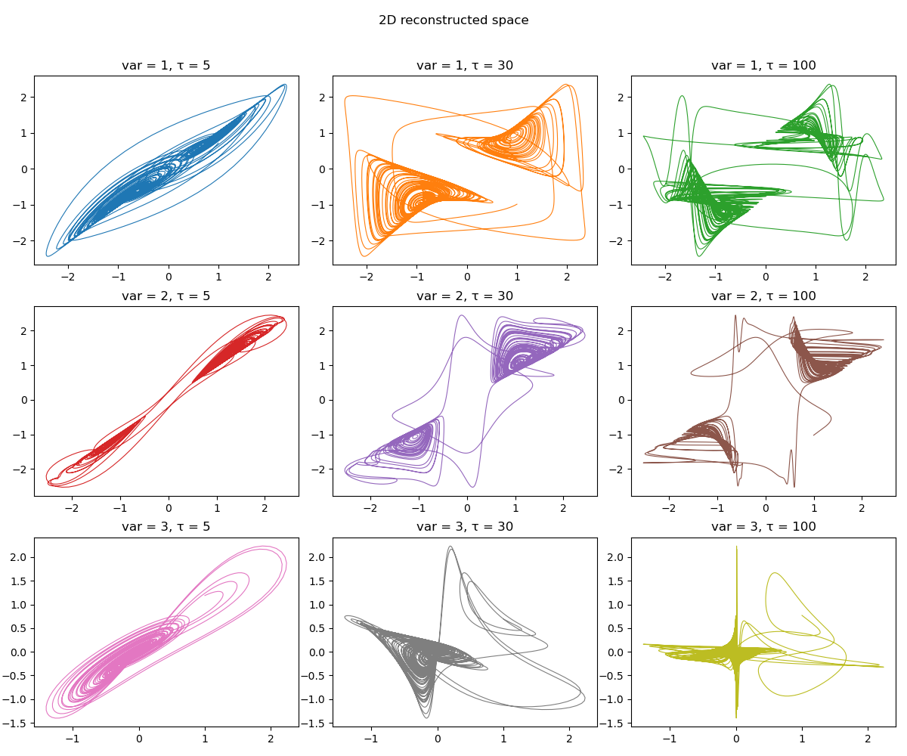

Delay Coordinates Embedding
A timeseries recorded in some manner from a dynamical system can be used to gain information about the dynamics of the entire phase-space of the system. This can be done by reconstructing a new phase-space from the timeseries. One method that can do this is what is known as delay coordinates embedding or delay coordinates reconstruction.
Reconstruct/Embed
Delay embedding reconstructions are done through reconstruct or embed:
DelayEmbeddings.reconstruct — Functionreconstruct(s, γ, τ [, w])Reconstruct s using the delay coordinates embedding with γ temporal neighbors and delay τ and return the result as a Dataset. Optionally use weight w.
Use embed for the version that accepts the embedding dimension D = γ+1 instead. Here τ ≥ 0, use genembed for a generalized version.
Description
Single Timeseries
If τ is an integer, then the $n$-th entry of the embedded space is
If instead τ is a vector of integers, so that length(τ) == γ, then the $n$-th entry is
The reconstructed dataset can have same invariant quantities (like e.g. lyapunov exponents) with the original system that the timeseries were recorded from, for proper γ and τ. This is known as the Takens embedding theorem [1, 2]. The case of different delay times allows reconstructing systems with many time scales, see [3].
Notice - The dimension of the returned dataset (i.e. embedding dimension) is γ+1!
If w (a "weight") is provided as an extra argument, then the entries of the embedded vector are further weighted with $w^\gamma$, like so
Multiple Timeseries
To make a reconstruction out of a multiple timeseries (i.e. trajectory) the number of timeseries must be known by type, so s must be a Dataset.
If the trajectory is for example $(x, y)$ and τ is integer, then the $n$-th entry of the embedded space is
If τ is an AbstractMatrix{Int}, so that size(τ) == (γ, B), then we have
Notice - The dimension of the returned dataset is (γ+1)*B!
References
[1] : F. Takens, Detecting Strange Attractors in Turbulence — Dynamical Systems and Turbulence, Lecture Notes in Mathematics 366, Springer (1981)
[2] : T. Sauer et al., J. Stat. Phys. 65, pp 579 (1991)
[3] : K. Judd & A. Mees, Physica D 120, pp 273 (1998)
DelayEmbeddings.embed — Functionembed(s, D, τ)Perform a delay coordinates embedding on signal s with embedding dimension D and delay time τ. The result is returned as a Dataset, which is a vector of static vectors.
See reconstruct for an advanced version that supports multiple delay times and can reconstruct multiple timeseries efficiently.
Here are some examples of reconstructing a 3D continuous chaotic system:
using DynamicalSystems, PyPlot
ds = Systems.gissinger(ones(3))
data = trajectory(ds, 1000.0, dt = 0.05)
xyz = columns(data)
figure(figsize = (12,10))
k = 1
for i in 1:3
for τ in [5, 30, 100]
R = reconstruct(xyz[i], 1, τ)
ax = subplot(3,3,k)
plot(R[:, 1], R[:, 2], color = "C$(k-1)", lw = 0.8)
title("var = $i, τ = $τ")
global k+=1
end
end
tight_layout()
suptitle("2D reconstructed space")
subplots_adjust(top=0.9)
Keep in mind that whether a value of τ is "reasonable" for continuous systems depends on dt. In the above example the value τ=30 is good, only for the case of using dt = 0.05. For shorter/longer dt one has to adjust properly τ so that their product τ*dt is the same.
You can also reconstruct multidimensional timeseries. For this to be possible, the number of timeseries must be known by Type:
using StaticArrays: Size
a = rand(1000, 3) # my trajectory
A = Size(1000, 3)(a) # create array with the size as Type information
R = reconstruct(A, 2, 2) #aaaall good9-dimensional Dataset{Float64} with 996 points
0.680293 0.89529 0.854975 … 0.590731 0.317169 0.41862
0.485748 0.509966 0.240971 0.366501 0.669189 0.952495
0.590814 0.86553 0.984188 0.928369 0.890644 0.0108945
0.350404 0.504265 0.188713 0.599841 0.244898 0.00563381
0.590731 0.317169 0.41862 0.364352 0.0089504 0.587184
0.366501 0.669189 0.952495 … 0.704063 0.544143 0.368241
0.928369 0.890644 0.0108945 0.228027 0.816519 0.432896
0.599841 0.244898 0.00563381 0.372183 0.584875 0.254476
0.364352 0.0089504 0.587184 0.365159 0.249497 0.473646
0.704063 0.544143 0.368241 0.554838 0.128663 0.134635
⋮ ⋱
0.249835 0.0297334 0.282251 0.513388 0.258855 0.0517013
0.811622 0.671736 0.376039 0.481287 0.161599 0.210914
0.546629 0.155103 0.846452 0.0438083 0.516934 0.479143
0.319904 0.0935264 0.35697 0.34159 0.595358 0.974579
0.513388 0.258855 0.0517013 … 0.342661 0.792762 0.460946
0.481287 0.161599 0.210914 0.908326 0.0328217 0.363156
0.0438083 0.516934 0.479143 0.291743 0.0642546 0.103929
0.34159 0.595358 0.974579 0.718267 0.607985 0.948659
0.342661 0.792762 0.460946 0.0276357 0.853543 0.558312ds = Systems.towel(); tr = trajectory(ds, 10000)
R = reconstruct(tr, 2, 2) # Dataset size is also known by Type!9-dimensional Dataset{Float64} with 9997 points
0.085 -0.121 0.075 … 0.837347 0.0372633 0.555269
0.285813 -0.0675286 0.238038 0.51969 0.0616256 0.940906
0.76827 -0.038933 0.672094 0.966676 -0.00171595 0.2225
0.681871 0.0508933 0.825263 0.112748 0.0674955 0.653573
0.837347 0.0372633 0.555269 0.386547 -0.0886542 0.869349
0.51969 0.0616256 0.940906 … 0.910741 -0.0316828 0.411607
0.966676 -0.00171595 0.2225 0.306095 0.0689305 0.909129
0.112748 0.0674955 0.653573 0.824263 -0.056185 0.326064
0.386547 -0.0886542 0.869349 0.545332 0.0508239 0.819404
0.910741 -0.0316828 0.411607 0.954994 0.00453815 0.569534
⋮ ⋱
0.914702 -0.0315439 0.294266 0.90246 0.0242141 0.539502
0.289932 0.0641239 0.778698 0.335976 0.0735803 0.943945
0.793854 -0.0552801 0.664223 0.86657 -0.0497658 0.214728
0.62671 0.0557527 0.832001 0.430816 0.0535742 0.62743
0.90246 0.0242141 0.539502 … 0.936955 -0.0200112 0.894333
0.335976 0.0735803 0.943945 0.237481 0.0983265 0.353212
0.86657 -0.0497658 0.214728 0.681538 -0.0476555 0.883219
0.430816 0.0535742 0.62743 0.836353 0.0363264 0.380351
0.936955 -0.0200112 0.894333 0.515471 0.0534613 0.898152Embedding Functors
The high level functions embed, reconstruct utilize a low-level interface for creating embedded vectors on-the-fly. The high level interface simply loops over the low level interface. The low level interface is composed of the following two structures:
DelayEmbeddings.DelayEmbedding — TypeDelayEmbedding(γ, τ) → `embedding`Return a delay coordinates embedding structure to be used as a functor, given a timeseries and some index. Calling
embedding(s, n)will create the n-th delay vector of the embedded space, which has γ temporal neighbors with delay(s) τ. See reconstruct for more.
Be very careful when choosing n, because @inbounds is used internally. Use τrange!
DelayEmbeddings.WeightedDelayEmbedding — TypeWeightedDelayEmbedding(γ, τ, w) → `embedding`Similar with DelayEmbedding, but the entries of the embedded vector are further weighted with w^γ. See reconstruct for more.
DelayEmbeddings.MTDelayEmbedding — TypeMTDelayEmbedding(γ, τ, B) -> `embedding`Return a delay coordinates embedding structure to be used as a functor, that embeds multiple timeseries (B in total) given in the form of a Dataset.
Calling
embedding(s, n)where s is a Dataset will create the n-th delay vector of the embedded space, which has γ temporal neighbors with delay(s) τ. See reconstruct for more.
Be very careful when choosing n, because @inbounds is used internally. Use τrange!
DelayEmbeddings.τrange — Functionτrange(s, de::AbstractEmbedding)Return the range r of valid indices n to create delay vectors out of s using de.
Generalized Embeddings
DelayEmbeddings.genembed — Functiongenembed(s, τs, js = ones(...)) → datasetCreate a generalized embedding of s which can be a timeseries or arbitrary Dataset, and return the result as a new dataset.
The generalized embedding works as follows:
τsdenotes what delay times will be used for each of the entries of the delay vector. It is recommended thatτs[1] = 0.τsis allowed to have negative entries as well.jsdenotes which of the timeseries contained inswill be used for the entries of the delay vector.jscan contain duplicate indices.
τs, js are tuples (or vectors) of length D, which also coincides with the embedding dimension. For example, imagine input trajectory $s = [x, y, z]$ where $x, y, z$ are timeseries (the columns of the Dataset). If js = (1, 3, 2) and τs = (0, 2, -7) the created delay vector at each step $n$ will be
js can be skipped, defaulting to index 1 (first timeseries) for all delay entries.
See also reconstruct. Internally uses GeneralizedEmbedding.
DelayEmbeddings.GeneralizedEmbedding — TypeGeneralizedEmbedding(τs [, js]) -> `embedding`Return a delay coordinates embedding structure to be used as a functor. Given a timeseries or trajectory (i.e. Dataset) s and calling
embedding(s, n)will create the delay vector of the n-th point of s in the embedded space using generalized embedding (see genembed).
js is ignored for timeseries input s (since all entries of js must be 1 in this case) and in addition js defaults to (1, ..., 1) for all τ.
Be very careful when choosing n, because @inbounds is used internally. Use τrange!